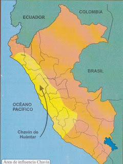

Cultura Chavin
Chavín es el período final del largo proceso de domesticación de plantas y animales (Neolítico). En esta época, tanto las artes de la ganadería, como las de la agricultura y las de la construcción y la manufactura −incluyendo la metalúrgica − estaban ya incorporadas en los dominios de la práctica social. De modo que no se trata de una etapa “inicial” en ese sentido; lo es, en cambio, en la intensificación de las funciones de los centros ceremoniales, que se convirtieron en los ejes del desarrollo económico.
La cultura Chavín fue una civilización que se desarrolló en los Andes del norte de Perú entre los años 900 a.C. hasta 200 a.C. El descubridor de la cultura Chavín es el arqueólogo Julio Tello, quien la nombro como la cultura matriz o madre de las civilizaciones andinas del Perú, pero descubrimientos arqueológicos demuestran que la cultura Caral es la más antigua de las civilizaciones andinas y sería un foco de irradiación cultural. La cultura Chavín se desarrollo en la etapa formativa de la historia del Perú y pertenece a las culturas del primer Horizonte Cultural.
La cultura Chavín tuvo su origen en el templo denominado Chavín de Huántar, en el Departamento de Ancash, a 300 quilómetros al norte de la ciudad de Lima. Probablemente los pobladores de Chavín eran originarios de las regiones selváticas ya que utilizaban mucha iconografía selvática como la figura del jaguar, caimán y anaconda.
El sitio arqueológico de Chavín de Huántar fue construido alrededor del año 900 a.C. y fue el centro religioso del pueblo Chavín. Ahora es un Patrimonio de la Humanidad declarado por la Unesco.
PERTENECE: PRIMER HORIZONTE U HORIZONTE TEMPRANO

Ubicación geográfica
La cultura Chavín se encuentra ubicada en el callejón de Conchucos en el lado oriental de la Cordillera Blanca, a orillas del rio Mosna en la cuenca del afluente del alto Marañon, Provincia del Huari, departamento de Ancash. Esta área se encuentra ubicada a 3.150 metros sobre el nivel del mar y abarca las regiones naturales (zonas de vida) quechua, jalca, y puna.
Se extendió desde Lambayeque hasta Ica en la costa y desde Cajamarca hasta Ayacucho por la sierra. Es considerada una cultura panperuana ya que se extendió por gran parte del territorio peruano.
Correo de contacto